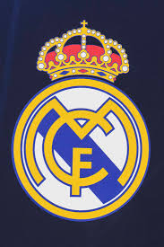

Estructura
El Real Madrid Club de Fútbol es uno de los clubes de fútbol más famosos y exitosos del mundo.
Fundado en 1902, tiene su sede en Madrid, España. Es conocido por sus colores blanco y su emblemático estadio, el Santiago Bernabéu.
El club ha ganado numerosos títulos, incluyendo múltiples campeonatos de La Liga y de la UEFA Champions League. Además de su equipo de fútbol,
el Real Madrid también tiene secciones en otros deportes, como baloncesto. Su historia está marcada por grandes jugadores y una intensa rivalidad
con el FC Barcelona, conocida como "El Clásico". El Real Madrid es también una entidad muy influyente en el mundo del deporte,
tanto por su historia como por su base de aficionados a nivel global.
El CD Leganés, o Club Deportivo Leganés, es un club de fútbol español situado en Leganés,
una ciudad de la Comunidad de Madrid. Fundado en 1928, el equipo juega sus partidos en el Estadio Municipal Butarque.
Aunque ha tenido periodos en divisiones menores, en los últimos años ha alcanzado cierta notoriedad, incluyendo su ascenso a LaLiga,
la primera división del fútbol español. El club es conocido por su afición apasionada y por el desarrollo de jóvenes talentos.


Fundación: El club fue fundado el 6 de marzo de 1902 por un grupo de aficionados al fútbol.
Recibió el título de "Real" en 1920, otorgado por el rey Alfonso XIII.El Real Madrid fue uno de los clubes fundadores de la Primera División española en 1929.